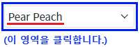
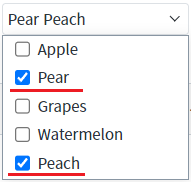
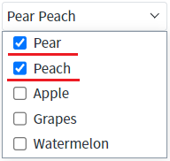
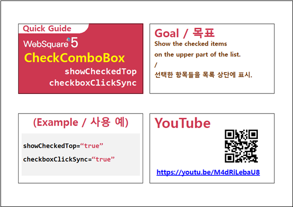

속성 'showCheckedTop'의 설정 값에 따른 비교 예제입니다. 이 속성은 선택 된 항목을 목록 상단에 표시하는 기능을 제공합니다.
이 기능은 속성 'checkboxClickSync'의 설정 값이 'true'일 때 동작합니다.
설정 값에 따른 동작은 아래와 같습니다. - "false" : [default] 목록의 순서대로 선택된 항목이 표시됩니다. - "true" : 선택된 항목이 목록 상단에 표시됩니다.
속성 'showCheckedTop'은 아래의 엔진부터 제공됩니다.
- RC: 5.0_5.4786B.20230106.154957
- GA: 5.0_5.4877A.20230405.131227
목록의 순서에 따라 선택된 항목을 표시하기
목록 상단에 선택된 항목을 표시하기
STEP 1. 초기 상태를 확인합니다.
예제 영역 [(기본 설정) 목록의 순서에 따라 선택된 항목을 표시하기]에 구성된 CheckCombobox를 확인합니다.
항목 'Pear', 'Peach'가 선택된 상태입니다.STEP 2. CheckCombobox의 목록을 확장합니다.
그림 1.브라우저(Chrome) 실행 예시

STEP 3. 실행된 결과를 확인합니다.
목록의 순서대로 선택된 항목이 표시됩니다.
그림 2.브라우저(Chrome) 실행 예시

STEP 1. 초기 상태를 확인합니다.
예제 영역 [목록 상단에 선택된 항목을 표시하기]에 구성된 CheckCombobox를 확인합니다.
항목 'Pear', 'Peach'가 선택된 상태입니다.STEP 2. CheckCombobox의 목록을 확장합니다.
그림 3.브라우저(Chrome) 실행 예시
STEP 3. 실행된 결과를 확인합니다.
목록의 상단에 선택된 항목이 표시됩니다.
그림 4.브라우저(Chrome) 실행 예시

컴포넌트의 속성을 정의합니다.
[필수] showCheckedTop="true"
[필수] checkboxClickSync="true"
이 속성이 "true"로 지정되어야 속성 'showCheckedTop'이 동작합니다.
showCheckedTop
checkboxClickSync
CheckComboBox - showCheckedTop & checkboxClickSync
링크 : https://youtu.be/M4dRiLebaU8
